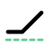

HedgeCheckPre-trade verification of whether a proposed hedge satisfies an explicit protection objective, what satisfying it costs, and what the alternatives are — for Hyperliquid HIP-4 outcome markets.
Do these exact terms, costs and holdings satisfy a stated objective — and what does satisfying it cost, against the alternatives?
A trader holding an exposure and wanting a bound on their loss can read a payoff diagram, but a diagram does not answer whether a specific proposed position meets a specific stated objective, nor what that costs relative to the alternatives. HedgeCheck takes the objective as an input and returns a verdict with its evidence.
Three answers are possible, and they are different: passes,
fails with a witness naming the adverse state, and
needs_review where a bound is too loose to decide. A refusal is a
fourth thing and not a verdict — a proposal that cannot be lowered has no
result, so the tool declines rather than guessing.
Three independent implementations of one specification, which must agree:
fractions.math/big.BigInt, no dependencies.No floating point anywhere on an evaluation path. A disagreement between any two of them fails the build, so a verdict is a claim three separately written programs reached from the same bytes. Contract semantics are data rather than code: a registry entry states one family's payoff reading, and a proposal pins the digest of the reading it was evaluated against, so a later edit to that reading cannot silently change an old answer.
The checker below is the same TypeScript implementation the project ships. It runs here, hashes every file it reads, and re-derives the payoff profile, the premium, the reductions, the verdict and the worst case from the proposal and the retained market snapshots. Each of these refuses a specific falsification:
| Alter this | And it refuses with |
|---|---|
| one character of a retained snapshot | a hash that does not match the digest the proposal cites |
| the stated premium | COST_MISMATCH |
| the worst case, by 0.00001 | PROFILE_VALUE |
the attained flag | PROFILE_VALUE |
| the price the worst case names | PROFILE_VALUE |
The worst-case checks exist because building this page exposed their absence.
Both the checker and the Python refuser compared the payoff profile and then took
the worst_case summary on trust, so a falsified number could sit on
top of a correct payoff — and that summary is exactly what a reader acts
on. Each of the five rows above was watched failing before being trusted, and two
corruption fixtures hold them permanently.
One deliberate looseness: the price is checked by value rather than by equality. A flat run attains its infimum at every price in it, so two correct implementations may name different prices and both be right. What must hold is that the named price lies in the domain and really produces the value claimed beside it.
Retained capture, 18 September 2026. Hold 0.1 BTC; lose at most 1,000 anywhere in 60,000–110,000. Hedged with YES on the lowest bucket of a BTC outcome market expiring 2026-09-19T06:00:00Z.
Every figure here is reproducible offline from retained captures, and is held against those bytes by the project's own test suite — a published number cannot drift from the capture it came from.
The same objective, the same baseline of 77,631.4, three different proposals:
| Proposal | Verdict | Premium | Why |
|---|---|---|---|
bucket0 | passes | 160.76676 | Meets the cap, and cheaply |
binary | passes | 645.76904 | Also meets it, at four times the premium |
bucket0-horizon | fails | — | The leg expires before the objective is valued |
The third is the informative one. Its hedge leg is observed a day before the
objective's valuation time, so the engine does not guess what happens in
between: it applies a horizon_mismatch reduction, worst-cases the
leg to zero, and reports a bound that is attained rather than estimated.
The resulting worst case is −1,923.91 against an unhedged
−1,763.14 — premium spent on protection that has expired, so the
position is worse than no hedge at all. A tool that passed it would be
dangerous.
Ranking the two that pass, by the cost of the smallest size that met the objective, is the answer a payoff diagram cannot give: not is this hedge sound but which sound hedge is cheapest.
Both were read from books the project had not seen before. Each is retained and replays byte-for-byte.
| Capture | Leg | Size | Premium | Worst case |
|---|---|---|---|---|
| 5 October 2026 | binary-no | 987 | 350.3793 | −1,999.3793 |
| 12 October 2026 | bucket0-yes | 542 | 286.71258 | −1,999.61258 |
Each is derivable from its capture without the engine. For 5 October, at a
baseline of 86,360: the spot loss at the floor is
0.1 × (60,000 − 86,360) = −2,636, the hedge leg
pays 987 × 1 = +987, and the premium is −350.3793,
giving −1,999.3793 against a 2,000 cap. The other candidate for the worst
case — just above the target, where the leg pays nothing — is
−411.4793, so the floor is the binding price and the bound is attained
there. Both candidates are derived before the engine's own number is read, so
the binding state is identified rather than assumed.
For the eleven days before 5 October the tool refused every cap, because protection cost essentially its full payoff. Those refusals are part of the evidence rather than a gap in it: a tool that only ever passes has not been shown to work.
git clone https://github.com/arcbjorn/hedgecheck
cd hedgecheck
make checkOffline, no install step; needs python3, go,
node 23.6 or later, and deno. It regenerates and
compares the conformance vectors, validates every contract document against the
frozen schemas, replays the retained live captures byte for byte, and runs the
Go, TypeScript and Solidity suites.
python3 tools/replay_live.py fixtures/live/2026-10-05
python3 tools/replay_live.py fixtures/live/2026-10-12Each snapshot digest is SHA-256 over the venue's bytes exactly as they arrived. Editing one price by a single digit, or adding one space, makes a bundle fail before it replays.
Stated here because a verification tool that overstates its own scope is the failure mode that matters most.
A hosted service that takes a position and a cap and answers from live books is a natural next step and is not part of this submission. It would need a server making venue calls on a visitor's behalf, with the rate limiting and abuse surface that implies, and presenting it as working would break the discipline the rest of the project follows. The verifier above is the honest static equivalent: it runs the real checker against a real retained result, in the reader's own browser, with no server at all.